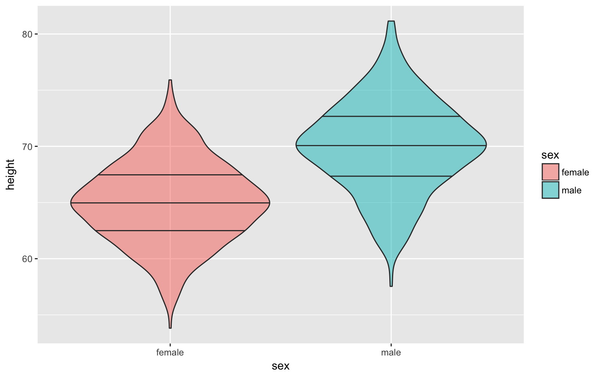

viridis package to set coloursgganimatelibrary(tidyverse)
library(viridis)data.frame(
age = rpois(1000, 2) + 18
) %>%
ggplot(aes(age)) +
geom_histogram(binwidth = 1, fill="red", alpha=0.5)df <- data.frame(
sex = rep(c("male", "female"), each = 500),
height = c(rnorm(500, 70, 4), rnorm(500, 65, 3.5))
)
ggplot(df, aes(height, fill=sex)) +
geom_density(alpha=0.5) +
geom_vline(xintercept = mean(df$height)) +
xlim(45, 90) +
xlab("Height (in inches)")ggplot(df, aes(sex, height, fill=sex)) +
geom_hline(yintercept = mean(df$height)) +
geom_boxplot(alpha=0.5)ggplot(df, aes(sex, height, fill=sex)) +
geom_violin(draw_quantiles = c(0.25, 0.5, 0.75), alpha=0.5)
df2 <- data.frame(
x = rnorm(100)
) %>%
mutate(y = x + rnorm(100, 0, 0.5))
ggplot(df2, aes(x, y)) +
geom_point()ggplot(df2, aes(x, y)) +
geom_smooth(method="lm")ggplot(df2, aes(x, y)) +
geom_smooth(method="lm") +
geom_point()You can deal with overlapping data points (very common if you’re using Likert scales) by reducing the opacity of the points. You need to use trial and error to adjust these so they look right.
df3 <- data.frame(
x = rbinom(1000, 10, 0.5)
) %>%
mutate(y = x + rbinom(1000, 20, 0.5))
ggplot(df3, aes(x, y)) +
geom_point(size = 5, alpha = .05) +
geom_smooth(method="lm")Alternatively, you can transform your data to create a count column and use the count to set the dot colour.
df3 %>%
group_by(x, y) %>%
summarise(count = n()) %>%
ggplot(aes(x, y, color=count)) +
geom_point(size = 5) +
scale_color_viridis()data.frame(
a1 = rnorm(100),
b1 = rnorm(100)
) %>%
mutate(
a2 = a1 + rnorm(100),
a3 = a1 + rnorm(100),
a4 = a1 + rnorm(100),
b2 = b1 + rnorm(100),
b3 = b1 + rnorm(100),
b4 = b1 + rnorm(100)
) %>%
cor() %>%
as.data.frame() %>%
rownames_to_column(var = "V1") %>%
gather("V2", "r", a1:b4) %>%
ggplot(aes(V1, V2, fill=r)) +
geom_tile() +
scale_fill_viridis()